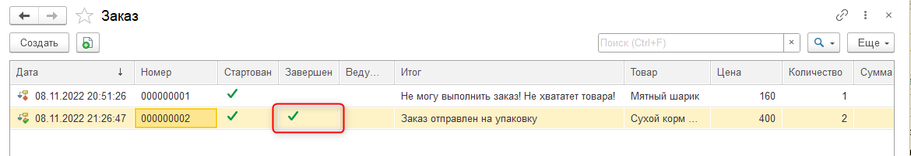

Тема этого занятия – автоматизация создания заказов клиентов. Товарные позиции и их количество должны выбираться случайным образом, а также должна рассчитываться сумма заказа.
В рамках четвертого занятия мы выполним 4 задачи:
Первая задача – создать бизнес-процесс и определить сценарий его работы.
Бизнес-процесс – это объект, который позволяет определить сценарий, по которому будет двигаться прогресс выполнения процесса. В нашем случае – заказа клиента. Сценарии могут быть различными: последовательные или с условиями. |
Добавим новый бизнес-процесс, нажав правой кнопкой мыши по ветке "Бизнес-процессы" и выбрав "Добавить". Имя бизнес-процесса – "Заказ" (рис. 4.1).
Рис. 4.1. Добавление бизнес-процесса "Заказ"
Перейдем на вкладку "Данные", чтобы определить структуру бизнес-процесса. Структура будет выглядеть следующим образом: бизнес-процесс должен давать обратную связь игроку о том, что заказ был отправлен, либо не был выполнен, потому что не хватило товара. Необходимо выводить итоговое сообщение. Для этой цели добавим новый реквизит. Имя реквизита – "Итог", тип – "строка", неограниченная длина (рис. 4.2). |
Рис. 4.2. Добавление реквизита "Итог"
Задача данного механизма заключается в том, чтобы указывать название товара, его цену, количество и сумму, следовательно, потребуется добавить соответствующие реквизиты в структуру бизнес-процесса.
Добавим еще один реквизит. Имя реквизита – "Товар", тип – "СправочникСсылка.Товары" (рис. 4.3).
Рис. 4.3. Добавление реквизита "Товар"
Далее необходимо добавить еще один реквизит для хранения информации о цене товара. Имя реквизита – "Цена", тип – "число", длина –10, точность – 0, неотрицательное (рис. 4.4).
Рис. 4.4. Добавление реквизита "Цена"
Также потребуется реквизит "Количество": тип – "число", длина – 10, точность – 0, неотрицательное (рис. 4.5).
Рис. 4.5. Добавление реквизита "Количество"
Последний реквизит, который необходимо добавить, – "Сумма": тип – "число", длина – 10, точность – 0, неотрицательное (рис. 4.6).
Рис. 4.6. Добавление реквизита "Сумма"
Для бизнес-процесса необходимо определить схему, по которой будет продвигаться сценарий посещения покупателем магазина и покупки товара. Данный сценарий реализуется с помощью карты маршрута. Создание карты маршрута – это вторая задача, которую мы выполним.
Карта маршрута описывает логику бизнес-процесса и весь его жизненный цикл от точки старта до точки завершения в виде схемы. |
Перейдем на вкладку "Прочее" и нажмем на кнопку "Карта маршрута", чтобы создать эту самую карту (рис. 4.7).
Рис. 4.7. Открытие карты маршрута
Для того чтобы настроить карту маршрута, необходимо выбрать вид элемента в нижней панели, либо в разделе "Карта маршрута", "Вставка элемента схемы" (рис. 4.8).
Рис. 4.8. Способы выбора элемента
Карта маршрута похожа на блок-схему, следовательно, начать нужно с определения точки старта, сигнала для системы о том, что начинается продвижение по данной карте (рис. 4.9).
Рис. 4.9. Выбор точки старта
После выбора элемента курсор превратится в черное перекрестие. С его помощью, удерживая левую кнопку мыши, можно определить начальное положение и размер элемента (рис. 4.10).
Рис. 4.10. Добавление точки старта
В дальнейшем можно будет изменять размер элемента, а также переносить его с помощью левой кнопкой мыши, либо стрелок на клавиатуре.
Необходимо обработать следующее событие: в магазин поступает заказ. Для этого добавим на схему точку действия таким образом, чтобы она располагалась ниже точки старта, а также стрелочка, которая из нее выходит, закрасилась. Это будет означать, что две точки соединились между собой (рис. 4.11).
Рис. 4.11. Добавление точки действия
Откроем свойства точки действия, чтобы настроить ее. Для этого необходимо нажать по точке правой кнопкой мыши и в списке выбрать "Свойства" (рис. 4.12).
Рис. 4.12. Переход к свойствам точки действия
На вкладке "Основные" определим имя точки действия – "ПоступилНовыйЗаказ" (рис. 4.13).
Рис. 4.13. Настройка точки действия
Эта точка действия будет отражать следующее событие: пришел клиент и хочет приобрести товар в магазине. После того, как новый заказ поступит, необходимо проверить, достаточно ли товара в наличии или нет.
Добавим соответствующую логику на схему: если товар в наличии, то мы продаем его клиенту. Иначе будет заново объявляться событие "Поступление нового заказа", что означает возвращение клиента в магазин в надежде, что товар появился.
Для того чтобы реализовать условие, потребуется точка условия. Добавим соответствующий элемент на схему ниже точки действия "Поступил новый заказ" (рис. 4.14).
Рис. 4.14. Добавление точки условия
Далее необходимо настроить точку условия через свойства. Имя точки – "ПроверкаТовараНаСкладе", заголовок – "Товар есть на складе?" (рис. 4.15).
Рис. 4.15. Настройка точки действия
Если товара нет на складе, то выход "Нет" будет возвращаться в точку "Поступил новый заказ", так как, несмотря на отсутствие товара в данный момент, клиент вернется за ним через некоторое время (рис. 4.16).
Рис. 4.16. Определение действия при отсутствии товара на складе
Если товара на складе достаточно, то заказ необходимо отправить покупателю. Чтобы реализовать такой вариант, необходимо добавить еще одну точку действия на схему. Имя точки действия – "ОтправкаЗаказа" (рис. 4.17).
Рис. 4.17. Добавление точки действия "Отправка заказа"
Последнее, что осталось сделать, – завершить бизнес-процесс, добавив точку завершения (рис. 4.18).
Рис. 4.18. Установка точки завершения
Схема бизнес-процесса готова, однако это еще не все.
Третья задача заключается в следующем: чтобы система могла дать ответ о наличии товаров на складе, необходимо определить программную логику точки условия. На данный момент функционала по контролю остатков нет в системе, поэтому ответ будет выдаваться случайным образом. В зависимости от ответа будет изменяться итоговое сообщение.
Для того чтобы добавить программную логику, необходимо открыть палитру свойств точки условия, перейти на вкладку "События" и нажать на лупу, чтобы создать обработчик события "Проверка условия" (рис. 4.19).
Рис. 4.19. Добавление обработчика события
В модуле объекта бизнес-процесса создастся обработчик с названием "ПроверкаТовараНаСкладеПроверкаУсловия", у которого есть два параметра: "ТочкаМаршрутаБизнесПроцесса" – описание точки маршрута и "Результат" – ответ, куда дальше двигаться по схеме. Ответов может быть два – "да" или "нет". Следовательно, "Результат" может быть в положении истина, либо ложь.
Чтобы реализовать случайный ответ о наличии товара на складе, потребуется генератор случайных чисел.
Если случайным образом будет получен ноль, то будем отказываться от дальнейшего продвижения по схеме и сообщать игроку, что товара не хватает.
Если случайным образом будет получена единица, то будем отправлять заказ на упаковку и выводить соответствующее сообщение пользователю.
В дальнейшем, когда будет создан механизм для контроля остатков, программная логика будет изменена.
Обновим конфигурацию базы данных и попробуем запустить пользовательский режим.
При обновлении возникнет ошибка, связанная с тем, что у бизнес-процесса не выбрана задача (рис. 4.20).
Рис. 4.20. Сообщение об ошибке
Данная ошибка возникла из-за того, что на карте маршрута каждая точка действия ("Поступил новый заказ" и "Отправка заказа") – это задачи, которые должны создаваться и фиксироваться, ведь если заказ поступил, и его можно обработать (хватает товара на складе), то первая задача выполняется. Также, если заказ отправляется, то данная задача выполняется, и происходит завершение бизнес-процесса (рис. 4.21).
Рис. 4.21. Карта маршрута бизнес-процесса
Чтобы фиксировать перечисленные выше этапы, потребуется соответствующий механизм – "Задача". Это последняя, четвертая задача, которая будет выполнена на текущем занятии.
Задачи – механизм, позволяющий вести учет заданий, которые составляют этапы в бизнес-процессах, а также описывать их распределение по исполнителям. |
Перед тем как создавать задачи, подкорректируем код в модуле объекта бизнес-процесса. Его можно открыть, нажав правой кнопкой мыши по бизнес-процессу "Заказ" в дереве конфигурации и выбрав в списке "Модуль объекта" (рис. 4.22).
Рис. 4.22. Переход в модуль объекта бизнес-процесса
Чтобы в бизнес-процесс попало сообщение о том, что не удалось выполнить заказ, либо что он отправлен на упаковку, необходимо записать данную информацию в бизнес-процессе.
Указать задачи для бизнес-процесса можно на вкладке "Основные" в поле "Задачи" (рис. 4.23).
Рис. 4.23. Вкладка "Основные" бизнес-процесса
В конфигурации пока нет механизма "Задачи". Добавим его, нажав правой кнопкой мыши по ветке "Задачи" в дереве конфигурации и выбрав "Добавить". Имя задачи – "ЭтапыЗаказа", представление объекта – "Этап заказа" (рис. 4.24).
Рис. 4.24. Создание задачи "ЭтапыЗаказа"
Теперь можно вернуться к бизнес-процессу и указать "Этапы заказа" в качестве задачи (рис. 4.25).
Рис. 4.25. Выбор задачи для бизнес-процесса
Обновим конфигурацию базы данных и запустим пользовательский режим, чтобы проверить результат.
Смоделируем процесс того, что в магазин пришел клиент. Необходимо зарегистрировать заказ. Обратимся к бизнес-процессу "Заказ" и нажмем "Создать" (рис. 4.26).
Рис. 4.26. Добавление нового заказа
Изначально бизнес-процесс обладает большим количеством дополнительных полей, которые для пользователя будут лишними, например, поле "Ведущая задача", а также кнопки "Активировать" и "Записать". В дальнейшем форма бизнес-процесса будет изменена.
Заполним информацию о заказе покупателя. В качестве товара укажем "Мятный шарик", цена – 160, количество – 1, сумма – 160. После заполнения всех полей нажмем на кнопку "Стартовать и закрыть" (рис. 4.27).

Рис. 4.27. Заполнение информации о заказе клиента
Процесс начался. Теперь необходимо проверить наличие товара на складе и продать товар, если это возможно. Чтобы зафиксировать этапы, необходимо перейти к списку этапов заказа (рис. 4.28).
Рис. 4.28. Переход к списку этапов заказа
Откроем карточку этапа заказа и выполним его, нажав на кнопку "Выполнено, закрыть" (рис. 4.29).

Рис. 4.29. Выполнение этапа заказа
После выполнения этапа заказа появилась новая задача, так как товара не оказалось в наличии (рис. 4.30).
Рис. 4.30. Форма списка "Этапы заказа"
Согласно схеме, которая была создана в режиме конфигуратора, если товара нет в наличии, то обработка поступления заказа начинается заново до тех пор, пока товар не появится на складе.
Если сейчас вернуться к списку бизнес-процессов (заказов) и обновить его вручную с помощью кнопки "Еще", "Обновить" (рис. 4.31), либо клавиши F5, то в бизнес-процессе поменяется значение в колонке "Итог" (рис. 4.32).
Рис. 4.31. Форма списка "Заказы"
Рис. 4.32. Изменение в колонке "Итог"
Данный бизнес-процесс не завершится, поскольку товара нет.
Создадим новый бизнес-процесс с товаром "Сухой корм", цена – 400, количество – 2, сумма – 800. Запустим данный бизнес-процесс с помощью кнопки "Стартовать и закрыть" (рис. 4.33).
Рис. 4.33. Создание нового заказа
Повторно стартовать уже начатый бизнес-процесс нельзя. |
Далее нужно обработать этапы в соответствующем списке. Откроем "Этапы заказа".
Данный список уже был открыт ранее, поэтому интерактивно он не обновляется. Нажмем на клавишу F5, чтобы его обновить.
На форме списка выбираем новый этап заказа и выполняем его (рис. 4.34).
Рис. 4.34. Выполнение этапа заказа
Для выполнения этого заказа на складе было достаточно товара. На форме списка появился новый этап "Отправка заказа" (рис. 4.35).
Рис. 4.35. Переход к этапу "Отправка заказа"
Если открыть список всех заказов и обновить его, то у последнего заказа в колонке "Итог" будет отображаться сообщение "Заказ отправлен на упаковку" (рис. 4.36).
Рис. 4.36. Изменение статуса заказа
Теперь можно зафиксировать отправку заказа, выполнив соответствующий этап (рис. 4.37).
Рис. 4.37. Выполнение этапа "Отправка заказа"
Теперь бизнес-процесс завершен. Если вернуться обратно к списку заказов и обновить его, то у последнего бизнес-процесса будет стоять галочка в графе "Завершен" (рис. 4.38).

Рис. 4.38. Завершение заказа
На этом четвертое занятие окончено!
На этом занятии мы приступили к созданию механизма, который автоматизирует поступление заказов от покупателей: создали бизнес-процесс и задачи для него, а также описали программную логику проверки товаров на складе.
На следующем занятии мы реализуем изменение итогового сообщения, программное создание документа "Заказ клиента" на основании бизнес-процесса, а также начнем создание механизма, позволяющего фиксировать остаток товара.
Это нужно запомнить |
|
|
Бизнес-процесс – это объект, который позволяет определить сценарий, по которому будет двигаться прогресс выполнения процесса. В нашем случае – заказа клиента. Сценарии могут быть различными: последовательные или с условиями. Карта маршрута описывает логику бизнес-процесса и весь его жизненный цикл от точки старта до точки завершения в виде схемы. |